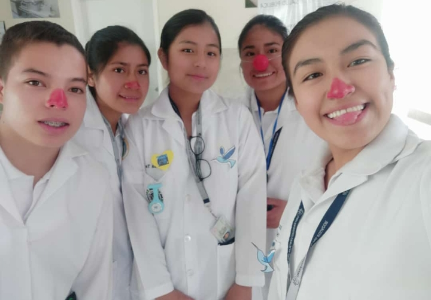

Formamos licenciadas /os en enfermería con elevada calidad científica, técnica, humana, compromiso social y preparación permanente en los distintos saberes, capaz de contribuir al mejoramiento de la condición de salud y vida del individuo, familia y comunidad desde su ámbito de competencia.
La Carrera de Enfermería es un centro académico pionero y líder en docencia, investigación y vinculación a la sociedad, que forma profesionales de enfermería con pensamiento crítico, para el cuidado integral e integrado de la salud con un enfoque intercultural, basados en los principios de veracidad, justicia social, equidad, solidaridad; promueve y genera procesos educativos de calidad con rigurosidad científica y humana que participan en el desarrollo sustentable y el buen vivir.
La Carrera de Enfermería de la Facultad de Ciencias Médicas de la Universidad Central del Ecuador será un centro educativo que liderará la formación de profesionales Enfermeras/ Enfermeros, con un perfil de formación acorde a la realidad epidemiológica del país, para proporcionar cuidados integrales humanizados y de calidad en los ámbitos de la promoción de la salud, prevención, recuperación y rehabilitación de las personas, familias y comunidad; generando conocimiento y metodologías apropiadas para el cuidado de la salud.
DIRECTORA DE CARRERA:
Esp.Gladys Patricia Morales

PERFIL DE EGRESO:
Demuestra una actitud proactiva fundamentada en principios, valores éticos, conciencia profesional humanizada, con enfoque familiar, comunitario e intercultural.
Comprende, interpreta y fundamenta el cuidado de la salud en evidencias sociales, psicológicas, clínicas y epidemiológicas.
Realiza actividades de cuidado, utilizando las estrategias de promoción de la salud, prevención y asistencia de las enfermedades prevalentes y su recuperación, como integrante del equipo multidisciplinario, contribuyendo a elevar el nivel de salud y la calidad de vida de la población.
Aplica cuidado integral a la persona sana o enferma, en sus diversas etapas del ciclo de vida, y en todos los niveles de atención, integrando conocimientos, experiencias, saberes, principios, habilidades y destrezas específicas de la profesión.
Prepara y ejecuta proyectos de investigación clínica y epidemiológica en el área de enfermería y de la salud haciendo uso adecuado de TICS con ética y criticidad.
Aplica educación planificada e incidental y una comunicación oral - escrita eficiente encaminadas a la prevención de enfermedades y promoción de la salud de manera comprometida y responsable.
Desarrolla actividades de educación comunitaria con énfasis en grupos prioritarios y vulnerables a través de proyectos de intervención con la comunidad encaminados a mejorar las condiciones de salud de la población con responsabilidad.
Síguenos en:


Tel: 123456789
Cel: 0912345678
Email: universidaduce@uce.edu.ec
Ubicación Google Maps